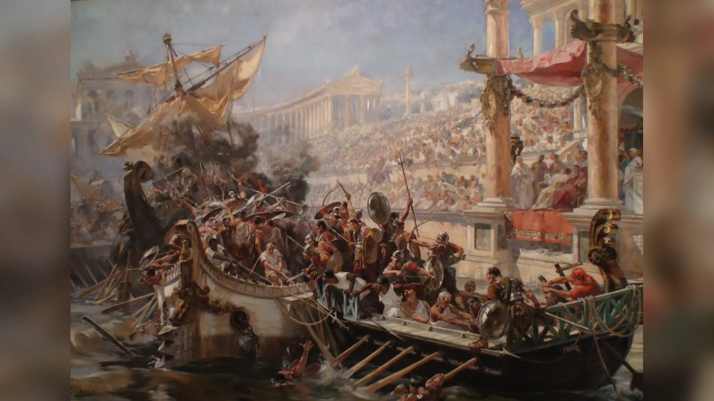
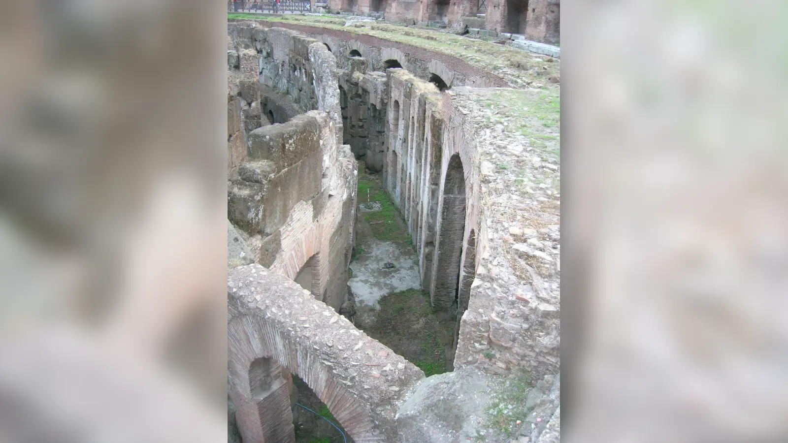
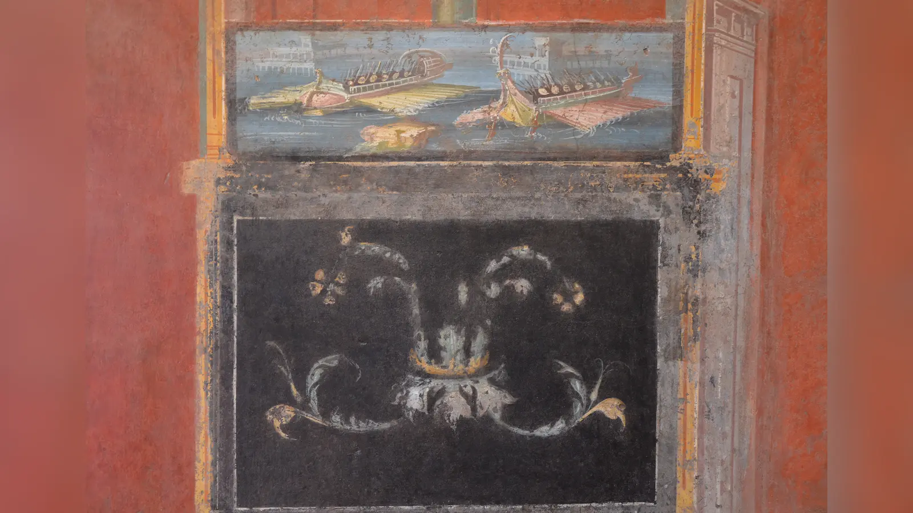
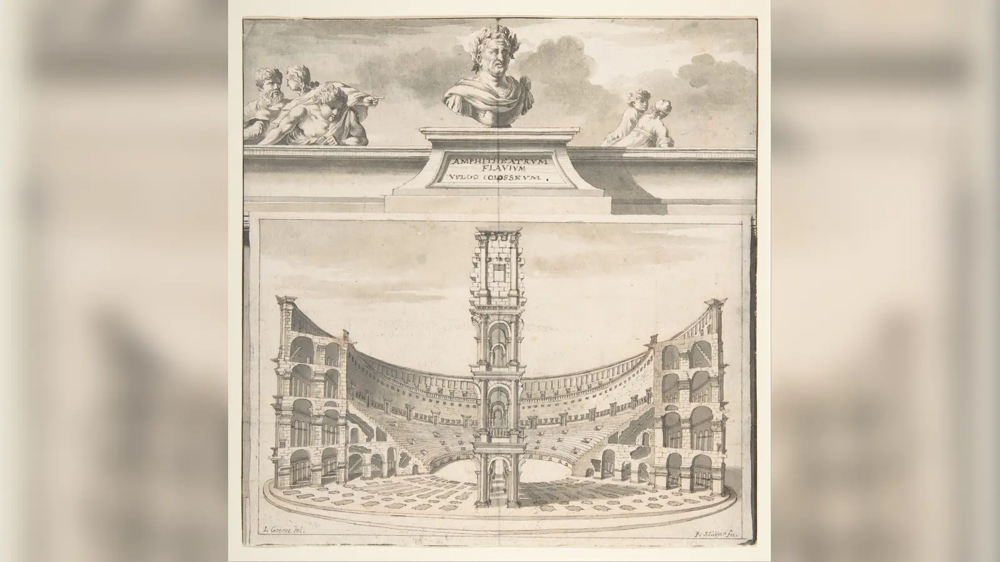

Kolezyum’da gerçekten deniz savaşları yapıldı mı? Roma tarihinin en çok tekrarlanan iddialarından biri, bugün taş koridorları ve yeraltı odaları açıkça görülen arenanın bir zamanlar suyla doldurulduğu, gemilerin içeri alındığı ve binlerce seyircinin önünde deniz muharebelerinin yeniden canlandırıldığıdır. İddianın bütünü modern bir efsane değildir. MS 80’de Flavius Amfitiyatrosu’nun açılış dönemini anlatan antik metinlerde su gösterileri, gemiler ve deniz savaşıyla ilişkilendirilen etkinlikler gerçekten geçer. Buna karşılık bu metinler aynı ayrıntıları vermez; bazı gösterilerin Kolezyum’da mı, yoksa Roma’da deniz savaşları için daha önce yapılmış özel havuzlarda mı gerçekleştiği her zaman açık değildir. Yapının sonraki evreleri de meseleyi karmaşıklaştırır, çünkü bugün görülen hypogeum açılış günündeki biçimiyle mevcut değildi.
Mevcut kanıtların izin verdiği en güvenli cevap şudur: Flavius Amfitiyatrosu’nun erken döneminde arena içinde su gösterileri ve gemilerle bağlantılı etkinlikler yapılmış olması ciddi biçimde mümkündür ve bunu destekleyen antik anlatılar vardır. Ancak arenanın tam olarak hangi sistemle, ne kadar derinliğe ve ne kadar sürede doldurulduğu bilinmez. Küçük veya gösteri için uyarlanmış teknelerin kullanılabileceği sınırlı su gösterileri fiziksel açıdan makul görünürken, modern filmlerdeki gibi tam ölçekli savaş gemilerinden oluşan filoların dar arena içinde manevra yaptığı büyük bir deniz muharebesi çok daha sorunlu bir iddiadır. Domitianus döneminde kalıcı hypogeum geliştirildikten sonra geniş çaplı su gösterileri için gereken açık alan da büyük ölçüde ortadan kalkmış olmalıdır.
Bu ayrım önemlidir; çünkü Roma’da gerçek anlamda dev naumachiaların düzenlendiği konusunda şüphe yoktur. Julius Caesar, Augustus ve Claudius çok daha geniş alanlarda büyük deniz savaşı gösterileri düzenlediler. Tartışma Roma’nın bunu yapıp yapamadığı değil, Kolezyum’un sınırlı arena alanında MS 80 civarında tam olarak ne yapıldığıdır. Antik kaynakta “gemi” veya “deniz savaşı” sözcüklerinin geçmesi, yüzlerce kürekçili gerçek savaş gemilerinin Kolezyum’da yüzdüğünü tek başına kanıtlamaz; aynı şekilde bugün arena altında taş hypogeum bulunması da açılış yıllarında su gösterisinin imkânsız olduğunu göstermez. Sorunun cevabı metinlerin, yapı evrelerinin ve Roma hidrolik mühendisliğinin birlikte okunmasını gerektirir.
Naumachia Nedir?
Naumachia sözcüğü Latinceye Yunanca naumachia, yani deniz savaşı anlamındaki kelimeden geçti. Roma kullanımında terim yalnızca sahnelenen deniz muharebesini değil, zaman zaman bu gösterinin gerçekleştirildiği özel havuzu veya alanı da ifade edebiliyordu. Bu çift anlam, kaynakları okurken önemlidir. Bir yazarın “naumachia”dan söz etmesi her durumda bir amfitiyatronun içindeki gösteriyi anlatmaz; Roma’da yalnızca bu amaçla kazılmış büyük havuzlar da vardı. Augustus’un Tiber’in ötesindeki büyük havuzu sonraki kaynaklarda “eski naumachia” olarak anılabildiği için, Flavius dönemindeki oyunları anlatan metinlerde gösterinin mekânını dikkatle ayırmak gerekir.
Naumachia sıradan gladyatör karşılaşmasının suya taşınmış biçimi de değildi. Profesyonel gladyatörler belirli silah sınıflarında eğitim gören ve arena kariyeri sürdürebilen dövüşçülerdi; deniz savaşı gösterilerinde ise mahkûmlar, savaş esirleri veya ölüm cezasına çarptırılmış kişiler kullanılabiliyordu. Antik kaynaklarda bu katılımcılar için naumachiarii sözcüğü görülür. Büyük gösterilerde tarihsel düşman filolarının adları verilerek savaşın belirli bir geçmiş çatışmayı temsil ettiği izlenimi yaratılabiliyor, fakat ortaya çıkan mücadele modern tarihsel canlandırma anlayışındaki titiz bir rekonstrüksiyon değildi. Seyirci için önemli olan deniz savaşının tanınabilir görüntüsü, gerçek şiddet ve Roma iktidarının olağanüstü bir çevreyi kısa süreliğine yaratabilmesiydi.
Naumachiaların ölçeği de tek tip değildi. Doğal gölde veya yüzlerce metre uzunluğundaki özel havuzda yapılan bir gösteri ile bir amfitiyatro arenasında gerçekleştirilebilecek su gösterisini aynı kategori içinde düşünmek yanıltıcı olabilir. Antik yazarlar farklı büyüklükteki etkinlikler için benzer deniz savaşı dilini kullanabildiğinden, “naumachia yapıldı” cümlesi tek başına gemilerin boyutunu, suyun derinliğini veya katılımcı sayısını açıklamaz. Kolezyum tartışmasının önemli kısmı tam da bu terminolojik boşlukta doğar.
Roma’da İlk Deniz Savaşı Gösterileri Nasıl Başladı?
Roma’da büyük naumachiaların tarihi Kolezyum’dan çok önce başlar. Julius Caesar MÖ 46’daki zafer kutlamaları sırasında büyük bir yapay havuz kazdırarak deniz savaşı gösterisi düzenledi. Suetonius bu gösteride Tyroslular ile Mısırlıları temsil eden filoların karşılaştığını aktarır. Mekânın ayrıntılı topografyası modern araştırmalarda tartışılmış olsa da olayın Kolezyum’un MS 80’deki açılışından yaklaşık 125 yıl önce gerçekleştiği açıktır. Bu kronoloji, deniz savaşı gösterilerinin Kolezyum için icat edildiği yönündeki yaygın izlenimi düzeltir. Caesar’ın gösterisi, Geç Cumhuriyet’in olağanüstü zafer kutlamaları ve siyasi prestij rekabeti içinde anlaşılmalıdır; Caesar’ın yükselişinin daha geniş siyasal bağlamı Julius Caesar neden öldürüldü? makalesindeki Cumhuriyet kriziyle birlikte okunabilir.
Augustus MÖ 2’de Mars Ultor Tapınağı’nın adanmasıyla bağlantılı oyunlar kapsamında Tiber’in ötesinde çok daha iyi belgelenmiş bir naumachia düzenledi. Res Gestae Divi Augusti’de kendi verdiği rakamlara göre kazılan alan 1.800 Roma ayağı uzunluğunda ve 1.200 ayak genişliğindeydi; otuz mahmuzlu trireme veya bireme ile daha küçük gemiler katılmış, kürekçiler dışında yaklaşık üç bin kişi savaşmıştı. Bu rakamlar Roma’da gerçekten çok büyük, özel amaçlı bir su alanının varlığını gösteren önemli birinci el iddiadır. Yine de Res Gestae tarafsız etkinlik raporu değildir. Augustus’un siyasi başarılarını ve halka sunduğu hizmetleri anıtsal biçimde ilan ettiği öz temsil metnidir. Dolayısıyla sayıları kaynakta verildiği biçimde aktarabiliriz, fakat onları modern denetimden geçmiş istatistikler gibi değerlendirmemek gerekir.
Augustus’un örneği Kolezyum tartışması için ölçü sağlar. Yaklaşık 533 × 355 metreye karşılık gelen havuz, Flavius Amfitiyatrosu’nun arena alanından kat kat büyüktü. Gerçek savaş gemilerine daha yakın teknelerin manevrası, büyük mürettebatlar ve geniş çaplı bir muharebe gösterisi için böyle bir özel alan çok daha uygundu. Roma’nın büyük naumachia yapabildiğini kanıtlamak, aynı ölçeğin Kolezyum’a sığdığını kanıtlamaz.
Claudius’un Fucinus Gölü Naumachiası ve Ünlü Selam
MS 52’de İmparator Claudius’un Fucinus Gölü’nde düzenlediği gösteri, Roma naumachialarının ulaşabildiği ölçeğin en çarpıcı örneklerinden biridir. Claudius gölün sularını boşaltmaya yönelik büyük mühendislik projesiyle bağlantılı olarak doğal gölü gösteri sahnesine çevirdi. Tacitus binlerce mahkûmun katıldığı son derece büyük bir mücadele aktarır; Suetonius ve Cassius Dio da olayı farklı ayrıntılarla anlatır. Antik sayıların büyüklüğü ihtiyatla ele alınsa bile burada Kolezyum’un küçük arenasıyla karşılaştırılamayacak bir su yüzeyi ve çok daha geniş hareket alanı söz konusudur.
“Ave imperator, morituri te salutant” veya yaygın çevirisiyle “Selam imparator, ölmek üzere olanlar seni selamlıyor” sözü de bu olayla bağlantılıdır. Suetonius’a göre savaşa girecek kişiler Claudius’a bu şekilde seslenmiş, imparatorun cevabını bağışlanma olarak yorumlayınca bir süre savaşmayı reddetmişlerdi. Daha sonraki popüler kültür bu cümleyi bütün gladyatörlerin arenaya girerken söylediği standart selam hâline getirdi. Antik kanıt bunu desteklemez. Söz, profesyonel gladyatörlerin düzenli ritüelinden değil, Fucinus’taki belirli naumachia katılımcılarından aktarılır. Modern klasik filoloji çalışmaları da bu olayın tekil niteliğine dikkat çeker.
Nero döneminde de su gösterileri düzenlendi. Suetonius, Nero’nun tuzlu suyla gerçekleştirilen ve deniz hayvanlarının bulunduğu bir deniz savaşı gösterisinden söz eder; Cassius Dio suyla doldurulan ve ardından yeniden kara gösterisine çevrilen mekânlar anlatır. Bu örnekler Roma gösteri teknolojisinde su ile kuru zemin arasında dönüşüm fikrinin Flaviuslardan önce de bulunduğunu gösterir. Fakat hangi Nero gösterisinin hangi yapıda yapıldığına ilişkin metinleri Kolezyum’un daha sonraki mühendisliğine doğrudan kopyalamak doğru değildir.
Flavius Amfitiyatrosu Neden İnşa Edildi?
Bugün “Kolezyum” dediğimiz yapının antik dönemdeki tarihsel adı Flavius Amfitiyatrosu’dur. İnşaat Vespasianus döneminde başladı, oğlu Titus tarafından MS 80’de açıldı ve Domitianus döneminde yapı ile hizmet altyapısı geliştirilmeye devam etti. “Colosseum” adı yapının yakınındaki Nero’nun devasa heykeli, Colossus ile bağlantılı olarak daha sonraki dönemlerde yaygınlaştı. Dolayısıyla MS 80’deki Romalı seyircinin açılışa “Kolezyum’un açılışı” diye gitmediğini hatırlamak, yalnızca isim ayrıntısı değil yapının Flavius hanedanı içindeki siyasi anlamını da doğru kurmak açısından önemlidir.
Amfitiyatro, Nero’nun Domus Aurea kompleksine ait yapay gölün bulunduğu vadide yükseldi. Flaviusların imparatorluk saray peyzajının bir bölümünü devasa halk gösteri alanına dönüştürmesi güçlü bir siyasi mesaj taşıyordu: Nero’nun özel kullanım ve saray lüksüyle özdeşleşen alanı, yeni hanedan Roma halkına gösteri sunan kamusal bir anıta çeviriyordu. Bu dönüşüm antik ve modern yorumlarda sıkça Flavius meşruiyetinin parçası olarak değerlendirilir.
Ancak burada kolay bir mühendislik sonucu çıkarmamak gerekir. “Nero’nun gölü burada olduğuna göre Kolezyum da aynı göl sistemiyle kolayca dolduruldu” cümlesi kanıtlanmış bir mekanizma değildir. Eski göl alanının drenajı, devasa beton temellerin inşası ve amfitiyatronun kendi su ve kanalizasyon altyapısı yeni bir yapı evresi yarattı. Topografyanın alçak olması ve bölgede gelişmiş su sistemlerinin bulunması su gösterisini teknik olarak düşünmeye yardımcı olur; eski gölün varlığı tek başına arena tabanının nasıl su geçirmez hâle getirildiğini veya suyun hangi borudan girdiğini göstermez.
Titus’un Açılış Oyunlarında Ne Yaşandı?
MS 80’deki açılış oyunları Kolezyum deniz savaşları tartışmasının merkezidir. Titus yeni amfitiyatroyu ve yakınındaki hamamları görkemli gösterilerle adadı. Suetonius, Titus biyografisinde amfitiyatrodaki büyük gladyatör gösterisini anlattıktan sonra bir deniz savaşı düzenlendiğini söyler; fakat bu naumachiayı açıkça “eski naumachia”ya, yani Augustus’un daha önce yaptırdığı özel havuza yerleştirir. Aynı yerde gladyatör dövüşü ve binlerce hayvanın sergilendiğini de aktarır. Bu metin tek başına okunduğunda Titus’un açılış kutlamalarında deniz savaşı olduğu kesindir, fakat bunun Kolezyum arenasında yapıldığı sonucu çıkmaz.
Cassius Dio farklı bir tablo sunar. MS 2. yüzyıl sonu ile 3. yüzyıl başında yazan Dio, yani olaydan yaklaşık bir asır sonra çalışan tarihçi, Titus’un “aynı tiyatroyu” aniden suyla doldurduğunu; suda hareket etmeye alıştırılmış atlar, boğalar ve başka hayvanlar getirildiğini; insanların gemilerle bir deniz çatışmasını temsil ettiğini aktarır. Ardından Augustus’un eski naumachia alanındaki başka büyük etkinliklerden söz eder. Dio’nun anlatısı doğru okunursa, iki ayrı su gösterisi mekânı vardır: biri Flavius Amfitiyatrosu’nun içinde, diğeri Augustus’un büyük havuzunda.
Martial ise açılış dönemine çok daha yakın bir tanıktır ve Liber Spectaculorum şiirlerinde arena içinde suyun varlığını güçlü biçimde çağrıştırır. Bir epigramında kısa süre önce kara olan yerin şimdi deniz gibi suyla dolduğunu, ardından tekrar karaya dönüşeceğini söyler; başka şiirlerinde su üzerinde veya içinde gerçekleştirilen mitolojik ve koreografik gösteriler anlatılır. Bu dizeler, arena ortamında su gösterileri yapıldığı görüşünün en önemli metinsel dayanaklarındandır. Fakat Martial bir mühendislik raporu yazmıyordu. Flavius saray çevresiyle ilişkili, imparatorluk gösterisinin ihtişamını öven epigramlar üreten şairdi; amacı boru çapını, su derinliğini veya gemi tonajını kaydetmek değildi.

Antik Kaynaklar Kolezyum Hakkında Ne Söylüyor?
Üç temel anlatı yan yana konduğunda tartışmanın neden iki yüzyıldır kapanmadığı anlaşılır. Suetonius açılış kutlamalarındaki deniz savaşını Augustus’un eski havuzuna yerleştirir. Cassius Dio hem amfitiyatro içindeki su gösterisini hem de eski naumachiadaki daha büyük etkinliği anlatır. Martial ise çok erken bir tarihte arena içinde kara ile su arasında hızlı dönüşüm izlenimi veren şiirsel tasvirler sunar. Bu kaynaklar birbirini tamamen dışlamaz; Titus aynı kutlama programında farklı mekânlarda birden fazla su gösterisi düzenlemiş olabilir. Fakat hepsi “Kolezyum’un içinde büyük savaş gemileriyle tam ölçekli muharebe yapıldı” cümlesini aynı açıklıkla söylemez.
Kaynakların tarihlerindeki fark da önemlidir. Martial MS 1. yüzyılda, gösterilere çok yakın dönemde yazmıştır; buna karşılık şiirinin övgü ve gösteri estetiği güçlüdür. Suetonius 2. yüzyılın başlarında biyografi yazarken imparatorların dikkat çekici davranışlarını ve gösterilerini seçerek anlatır. Cassius Dio ise Titus döneminden çok daha sonra, geniş Roma tarihi içinde olayı aktarır. Geç bir kaynağın otomatik olarak yanlış sayılması gerekmez; Dio bugün kaybolmuş daha erken kayıtları kullanmış olabilir. Fakat olaydan uzaklık ve metinler arasındaki farklılık, ayrıntıların bağımsız biçimde sınanmasını gerekli kılar.
Domitianus hakkındaki Suetonius anlatısı da önemlidir. Yazar, Domitianus’un amfitiyatroda bir deniz savaşı düzenlediğini, ayrıca Tiber yakınında yeni bir havuz kazdırarak başka büyük deniz gösterileri yaptığını aktarır. Bu ifade, amfitiyatro içinde en azından bir tür naumachia geleneği bulunduğunu destekler. Ancak Domitianus aynı zamanda Kolezyum’un yeraltı altyapısının kalıcı taş düzenine dönüştürüldüğü imparator olarak kabul edilir. Dolayısıyla onun saltanatı, su gösterisinin mümkün olduğu erken arena ile karmaşık hypogeumlu sonraki arena arasındaki geçiş evresidir.
Kolezyum’da Gerçekten Deniz Savaşları Yapıldı mı?
Soruyu kanıt düzeylerine ayırarak cevaplamak gerekir. Roma’da büyük naumachiaların yapıldığı kesin olarak biliniyor; Caesar, Augustus ve Claudius örnekleri yazılı kaynaklarla güçlü biçimde belgelenmiştir. Flavius Amfitiyatrosu’nun erken döneminde suyla bağlantılı gösterilerin yapıldığı antik kaynaklar tarafından aktarılıyor ve Martial’ın şiirleri ile Cassius Dio’nun anlatısı bu görüşün temel dayanaklarını oluşturuyor. Erken arena düzeninin bugünkü taş hypogeumdan farklı olduğu da arkeolojik yapı evreleriyle destekleniyor. Buna karşılık Kolezyum’un hangi sistemle doldurulduğu, suyun kesin derinliği ve “gemi” denen araçların boyutları doğrudan belgelenmiş değildir.
Bu nedenle “evet, Kolezyum bir zamanlar deniz savaşları için suyla dolduruldu” cümlesi ancak “deniz savaşı” ifadesinin ölçeğini açık bıraktığımızda savunulabilir. Küçük teknelerin, sığ suya uygun araçların veya gösteri amacıyla hazırlanmış gemi temsillerinin yer aldığı bir mücadele ile Augustus’un yüzlerce metre uzunluğundaki havuzunda gerçekleştirilen büyük naumachia aynı şey değildir. Antik metinlerin gösteri dilini modern savaş gemisi beklentisine çevirdiğimiz anda kanıtın taşıyamadığı ayrıntıları eklemeye başlarız.
Daha da önemlisi, “su gösterisi” ile “deniz savaşı” her zaman aynı gösteriyi anlatmaz. Martial’ın metinlerinde suya uyarlanmış hayvan gösterileri, mitolojik sahneler ve Nereidleri canlandıran yüzücüler gibi farklı su eğlenceleri bulunur. Cassius Dio da suda hareket eden hayvanlardan söz eder. Erken Kolezyum’un suyla doldurulabildiği kabul edilse bile her doldurma işleminin gemi çatışması için yapıldığı sonucu çıkmaz.
Kolezyum Nasıl Suyla Doldurulmuş Olabilir?
Roma mühendisliği su kemerleri, kanalizasyonlar, sarnıçlar ve büyük hamam kompleksleriyle yüksek düzeyde hidrolik uzmanlığa sahipti. Kolezyum çevresinde de suyun hem seyirci ihtiyaçları hem temizlik hem de drenaj için yönetilmesi gerekiyordu. Aqua Claudia’nın Caelius üzerindeki uzantıları ve Nero döneminden kalan su altyapısı, bölgeye yüksek kotlardan su ulaştırılabildiğini gösterir. Modern mühendislik araştırmaları, yakındaki su kaynakları ve büyük drenaj kanalları kullanılarak arenanın suyla doldurulmasının teorik olarak mümkün olabileceğini modellemiştir.
Martin Crapper, Graeme Hunter ve Roger Smith’in mühendislik çalışması, mevcut topografya, olası Aqua Claudia bağlantısı ve kanal kapasitesi üzerinden Kolezyum’un doldurulup boşaltılmasının hidrolik olarak uygulanabilir olup olmadığını incelemiştir. Bu tür çalışma önemli bir soruya cevap verir: bilinen Roma teknolojisi ve çevredeki altyapı böyle bir işlemi fizik kurallarına aykırı kılıyor mu? Cevap hayırdır; makul varsayımlar altında sistem modellenebilir. Fakat mühendislik modelindeki olası boru rotası, antik dönemde kesinlikle o rotanın kullanıldığını gösteren arkeolojik keşif değildir.
Kolezyum’un temel ve kanalizasyon sistemi de etkileyicidir. Yapının çevresinde ve ana eksenlerinde büyük drenaj kanalları bulunur; modern hidrojeolojik çalışmalar alanın yeraltı suyu ve drenaj koşullarını ayrıntılı biçimde incelemiştir. Bunlar suyun uzaklaştırılması için ciddi altyapı bulunduğunu gösterir. Yine de “kanal var, demek ki naumachia için yapıldı” biçiminde tek işlevli yorum güvenli değildir. On binlerce seyircinin kullandığı dev yapının yağmur suyu, çeşmeler, temizlik ve yeraltı suyu için zaten güçlü drenaja ihtiyacı vardı.
Arena tabanının su tutması ayrı problemdir. Erken ahşap altyapının kaldırılabilir bölümleri bulunmuş olabilir; su gösterisi için yüzeyin geçici olarak yalıtılması veya alt alanın belirli seviyeye kadar su tutacak biçimde düzenlenmesi gerekirdi. Bu mekanizmayı eksiksiz açıklayan antik teknik metin veya tartışmasız arkeolojik sistem elimizde değildir. Dolayısıyla “Kolezyum şu borudan dolduruluyor, şu kapaktan boşaltılıyordu” şeklindeki kesin şemalar kanıtlanmış gerçek olarak verilmemelidir.
Arena Zemini Ne Kadar Derindi?
“Kolezyum’daki su kaç metre derindi?” sorusuna güvenilir tek rakam vermek mümkün değildir. Antik yazarlar suyun derinliğini ölçü birimiyle kaydetmez. Üstelik bugün gördüğümüz hypogeumun derinliğini alıp “arena bu seviyeye kadar suyla doluyordu” demek yapı evrelerini birbirine karıştırır. Domitianus döneminde taşlaştırılan yeraltı koridorları, açılış yıllarındaki düzenin aynısı değildir. Erken evrede suyun hangi taban seviyesinde tutulduğu ve alt yapıdaki hangi hacimlerin suya açıldığı kesin olarak bilinmediğinden modern hesaplar varsayımlara dayanır.
Suyun gerekli derinliği kullanılan araçlara göre değişir. İnsanların ve hayvanların suda performans göstereceği bir gösteri için gereken derinlik ile tam boy savaş gemisinin yüzmesi için gereken su çekimi aynı değildir. Cassius Dio’nun suda hareket eden at ve boğaları anlatması, en azından aktardığı gösterinin bazı bölümlerinde çok derin bir suyun zorunlu olmadığını düşündürür. Buna karşılık kürekli teknenin gerçekten yüzebilmesi için gövdesinin altına yeterli su gerekir. Küçük, hafif ve gösteri için tasarlanmış araçlar burada büyük askerî gemilerden çok daha gerçekçi adaylardır.
Modern mühendislik modellerinde belirli derinlikler kullanılarak hacim ve dolum süresi hesaplanabilir; ancak model girdisi ile arkeolojik ölçüm aynı şey değildir. Bir araştırmacının “şu derinlik varsayılırsa sistem çalışır” demesi, Romalıların gerçekten o derinliği kullandığını kanıtlamaz. Bu nedenle internet üzerindeki kesin metre ve dakika rakamları kaynaklarının niteliğine göre değerlendirilmelidir.
Büyük Savaş Gemileri Kolezyum’a Sığabilir miydi?
Flavius Amfitiyatrosu’nun arena elipsi kaynaklara göre yaklaşık 79–83 × 47–48 metre ölçülerindedir. Bu alan gladyatör dövüşleri, hayvan gösterileri ve sahne düzenekleri için geniş görünse de Augustus’un yaklaşık 533 × 355 metrelik özel naumachia havuzuyla karşılaştırıldığında son derece küçüktür. Roma savaş gemilerinin tam boyutlu örnekleri onlarca metre uzunluğa ulaşabiliyor ve küreklerin çalışması için gövdenin çevresinde ek açıklık gerektiriyordu. Birkaç büyük gemiyi arenaya yerleştirmek geometrik olarak düşünülebilse bile onların gerçek deniz muharebesindeki gibi hızlanması, dönmesi, hat kurması ve manevra yapması çok daha ciddi problemdir.
Antik metinlerde kullanılan “gemi” veya “tekne” ifadelerini modern okuyucunun zihnindeki tam donanımlı trireme ile eşitlememek gerekir. Roma gösteri kültürü, gerçekliğin etkisini yaratmak için sahne araçlarını ve ölçek küçültmeyi kullanabiliyordu. Küçük tekneler, normal savaş gemilerinin hafifletilmiş kopyaları, sınırlı mürettebatlı araçlar veya belirli bir çatışma anını temsil etmek üzere hazırlanmış platformlar “deniz savaşı” izlenimi yaratabilirdi. Seyircinin yukarıdan baktığı arenada sembolik işaretler, kostümler ve karşıt filoların adları da gösterinin hangi savaşı temsil ettiğini anlatmaya yeterli olabilirdi.
Bu nedenle Kolezyum’da “gemi kullanılmış olamaz” demek gereksiz derecede katıdır; fakat yüzlerce kürekçinin bulunduğu büyük savaş filolarının arena içinde gerçekçi deniz manevraları yaptığı iddiası fiziksel ölçülerle uyuşmakta zorlanır. Büyük ölçekli naumachialar için Romalıların neden Augustus’un havuzu veya Fucinus Gölü gibi alanları kullandığı tam da burada anlaşılır.

Hypogeum Deniz Savaşlarını Nasıl Etkiledi?
Bugün Kolezyum’a yukarıdan bakıldığında görülen en belirgin özelliklerden biri arena tabanının altındaki duvar, koridor ve oda ağıdır. Hypogeum olarak adlandırılan bu altyapı hayvanların, sahne dekorlarının ve insanların arenaya çıkarılmasını sağlayan asansörler, kapaklar, geçitler ve hizmet alanlarıyla gösteri teknolojisinin merkezine dönüştü. Fakat bu görünüm MS 80’deki açılış gününün aynısı değildir. Parco archeologico del Colosseo, açılış dönemindeki yeraltı düzeninin ahşap unsurlar içerdiğini ve Domitianus döneminde kalıcı taş örgüyle dönüştürüldüğünü belirtir.
Bu kronoloji deniz savaşı tartışmasında belirleyicidir. Arena altı çok sayıda taş duvarla bölündüğünde, üstte geniş ve su geçirmez bir havuz oluşturmak hem yapısal hem işlevsel açıdan çok daha zor hâle gelir. Yeraltındaki kafesler, kaldırma sistemleri, koridorlar ve çalışan personel suyla uyumlu değildir. Bu nedenle Kolezyum içinde gerçekten geniş çaplı su gösterileri yapıldıysa, bunların en mantıklı zamanı açılış ile kalıcı hypogeumun gelişmesi arasındaki erken Flavius evresidir.
Ancak iki aşırı sonuçtan da kaçınmak gerekir. “Bugün hypogeum var, demek ki Kolezyum hiçbir zaman suyla doldurulmadı” yanlıştır; çünkü hypogeum sonraki yapı evresidir. “Açılışta bugünkü hypogeum yoktu, demek ki kesinlikle büyük deniz savaşı yapıldı” sonucu da aynı ölçüde hatalıdır; erken açık hacim yalnızca fiziksel engellerden birinin bulunmadığını gösterir. Suyun tutulması, doldurulması, boşaltılması ve teknelerin içeri alınması için gereken diğer koşullar ayrıca kanıtlanmalıdır.
Domitianus döneminin kendisi geçişin kesin tarihini belirlemeyi zorlaştırır. Antik kaynaklar onun amfitiyatroda deniz savaşı düzenlediğini söylerken arkeoloji kalıcı hypogeumun onun döneminde geliştirildiğini gösterir. Bu iki bilgi, yeraltı inşaatının tek günde tamamlanmadığını ve erken saltanat evresinde su gösterisinin hâlâ mümkün olabileceğini düşündürebilir. Fakat hypogeumun bütün bölümlerinin hangi yıl tamamlandığını kesin takvimle vermek mevcut kanıtın ötesine geçer.
Arkeolojik Kanıtlar Ne Gösteriyor?
Kolezyum’un arkeolojisi, yapının karmaşık su yönetimine sahip olduğunu açık biçimde gösterir. Temellerin çevresindeki kanalizasyon, ana eksenlerdeki büyük kolektörler, su dağıtım sistemleri ve yapının eski göl vadisindeki konumu hidrolik mühendisliğin inşaatın ayrılmaz parçası olduğunu ortaya koyar. Yeraltı bölümlerindeki farklı duvar evreleri de arena altının zaman içinde önemli ölçüde değiştirildiğini gösterir. Bu veriler, erken dönemde farklı bir arena düzeninin bulunduğunu destekler.
Buna karşılık arkeologların elinde “bu vana MS 80’de açıldı ve naumachia için arenayı şu seviyeye kadar doldurdu” diyebileceği eksiksiz, tartışmasız bir sistem yoktur. Yapının yüzyıllar boyunca yangınlar, onarımlar ve yeni gösteri mekanizmaları nedeniyle değişmesi erken evreyi okumayı zorlaştırır. MS 217 yangını ve sonraki kapsamlı onarımlar özellikle yeraltı altyapısının tarihini karmaşıklaştırmıştır. Orta Çağ ve modern dönemde yapıdan malzeme sökülmesi ve alanın farklı amaçlarla kullanılması da ilk Flavius evresinin izlerini azaltmıştır.
Arkeolojik sessizlik iki yönde de abartılmamalıdır. Doğrudan su geçirmez havuz kaplamasının bulunmaması, antik metinlerdeki bütün su gösterilerini otomatik olarak kurguya dönüştürmez; geçici veya daha sonra sökülmüş düzeneklerin iz bırakmaması mümkündür. Fakat antik şiirde “deniz” sözcüğü geçiyor diye arkeolojide bulunmayan ayrıntıları kesinleştirmek de doğru değildir. Tarihçinin görevi iki kanıt grubunu birbirine zorla uydurmak değil, her birinin neyi gösterebildiğini sınırlamaktır.
Modern hidrojeolojik araştırmalar Kolezyum çevresindeki yeraltı suyu koşullarını ve su kemeri bağlantılarını daha iyi anlamamızı sağlıyor. Bu çalışmalar erken su gösterisinin teknik açıdan imkânsız olmadığını güçlendirir, fakat tarihsel olayın ölçeğini doğrudan belirlemez. Teknik yapılabilirlik, gerçekleşmiş olayın kanıtlarından yalnızca biridir.
Deniz Savaşı Denilen Gösteri Gerçekte Neye Benziyordu?
Kolezyum’daki olası deniz savaşı için elimizde ayrıntılı program, gemi listesi veya sahne planı bulunmadığından kesin rekonstrüksiyon yapılamaz. Yine de Roma gösteri kültürünün başka örnekleri olasılıkların sınırını çizer. Büyük naumachialarda tarihsel tarafların isimleri kullanılabiliyor, seyircinin tanıyacağı savaşlar yeniden sahnelenebiliyor ve gerçek silahlı çatışma gösterinin parçası olabiliyordu. Daha küçük amfitiyatro ortamında ise aynı anlatı, sınırlı sayıda tekne ve daha kısa menzilli bir çatışmayla temsil edilmiş olabilir.
Martial’ın şiirleri erken Flavius gösterilerinde suyun yalnızca savaş için kullanılmadığını gösterir. Nereidleri temsil eden yüzücüler suda şekiller oluşturuyor, mitolojik anlatılar su ortamına taşınıyor ve hayvanların suda hareket ettiği sahneler seyirciye sunuluyordu. Cassius Dio’nun at ve boğaları anlatması da su gösterisinin çok biçimli karakterini destekler. Böyle bir programda arena bazen “deniz” görünümüne sokulmuş olabilir, fakat her sahnenin donanma çatışması olması gerekmez.
Roma seyircisi için suyun kendisi de gösterinin parçasıydı. Normalde kumla kaplı dövüş alanının kısa süre içinde su yüzeyine dönüşmesi ve ardından tekrar kara gösterisine hazırlanması, imparatorluk organizasyonunun teknik kapasitesini görünür kılıyordu. Martial’ın kara ile deniz arasındaki hızlı değişimi övmesi bu etkiyi özellikle vurgular. Burada siyasi mesajı yalnızca “ekmek ve sirk” klişesine indirgemek yetersizdir. İmparator, dünyanın farklı coğrafyalarını, hayvanlarını, savaşlarını ve hatta doğal unsurlarını Roma’nın merkezinde seyirlik düzene dönüştürebilen kişi olarak sunuluyordu.
Deniz zaferleri Roma siyasi kimliğinde ayrıca güçlü çağrışımlar taşıyordu. Augustus’un Actium zaferi ve Akdeniz üzerindeki Roma hâkimiyeti düşünüldüğünde, deniz savaşının sahnelenmesi yalnızca teknik merak değildi. İmparatorluğun uzak savaşları başkent seyircisinin önünde yeniden kuruluyor, tarih ve fetih kontrol edilebilir bir gösteriye çevriliyordu.
Gösterilerde Kimler Savaşıyordu?
Naumachia katılımcılarını profesyonel gladyatörlerle aynı kategoriye koymak yanıltıcıdır. Naumachiarii olarak anılan kişiler arasında mahkûmlar, savaş esirleri ve ölüm cezasına çarptırılmış insanlar bulunabiliyordu. Claudius’un Fucinus Gölü gösterisindeki savaşçılar buna güçlü örnektir. Tacitus onları suçlular olarak tanımlar ve çatışmanın gerçek kan dökülmesine yol açtığını açıkça aktarır. Büyük deniz gösterisinin insan maliyeti, sahne dekorundan ibaret değildi.
Profesyonel gladyatör ise belirli bir armatura içinde eğitilmiş, eşleştirme ve kariyer sistemi bulunan arena dövüşçüsüydü. Bu fark Antik Bilge’deki Gladyatörler nasıl yaşıyordu? makalesinde ayrıntılı biçimde ele alınan okul, eğitim ve meslek düzeni açısından önemlidir. Naumachiadaki mahkûmun gemide savaşması, onu otomatik olarak gladyatör yapmaz. Antik gösteriler farklı hukuki statülerdeki insanları aynı seyir programında kullanabiliyordu.
Katılımcıların ölüm oranı için bütün naumachialara uygulanabilecek tek rakam yoktur. Bazı antik anlatılar çok ağır kayıplar bildirir; özellikle mahkûmların kullanıldığı büyük gösteriler ölümcül olabiliyordu. Ancak farklı imparatorların, mekânların ve dönemlerin etkinliklerini tek bir yüzdeye indirmek mümkün değildir. Kolezyum’daki varsayılan küçük su gösterisinde kaç kişinin öldüğünü veya kaç kişinin katıldığını söyleyen güvenilir teknik kayıt yoktur.
Kolezyum Dışındaki Büyük Naumachialar
Kolezyum’daki olası gösterinin ölçeğini anlamak için en sağlam karşılaştırma özel naumachia alanlarıdır. Caesar’ın MÖ 46 gösterisi büyük bir kazı alanında yapıldı; Augustus MÖ 2’de Tiber ötesinde yüzlerce metre genişliğinde özel havuz kullandı; Claudius ise MS 52’de doğal Fucinus Gölü’nü sahneye çevirdi. Bu mekânların ortak özelliği, gerçek gemi hareketi ve büyük insan grupları için amfitiyatro arenasından çok daha geniş su yüzeyi sağlamalarıdır.
Augustus’un havuzu özellikle önemlidir, çünkü Titus’un MS 80 açılış kutlamalarında yeniden kullanıldı. Suetonius deniz savaşını açıkça bu “eski naumachia”ya yerleştirir; Cassius Dio da açılış programında burada ayrı bir büyük gösteri anlatır. Dolayısıyla Titus’un gerçekten büyük bir deniz savaşı sahnelemek istediğinde elinin altında zaten uygun bir mekân vardı. Bu durum, Kolezyum içindeki olası su gösterisinin neden daha küçük ve farklı nitelikte olabileceğini açıklayan güçlü bağlamsal kanıttır.
Roma dünyasında bazı başka amfitiyatrolarda da suyla ilişkili düzenekler ve gösteriler tartışılmıştır. Ancak her drenaj kanalını naumachia kanıtı saymak doğru değildir. Amfitiyatroların yağmur, temizlik ve seyirci kullanımı nedeniyle zaten su yönetimine ihtiyacı vardı. Bir yapıda su gösterisini savunmak için mimari altyapının yanı sıra yazılı, epigrafik veya bağlamsal kanıtların birlikte değerlendirilmesi gerekir.
Kolezyum’un Su Sistemleri Ne Kadar Gelişmişti?
Kolezyum yalnızca arena tabanından ibaret bir yapı değildi. On binlerce insanın aynı gün içinde kullandığı dev kompleksin çeşmeler, temizlik, yağmur tahliyesi ve yeraltı drenajı gibi ihtiyaçları vardı. Roma su kemerleri kentin yüksek noktalarına su taşıyor, dağıtım sistemleri farklı kamusal yapılara hizmet ediyordu. Aqua Claudia’nın Caelius çevresindeki uzantıları, Kolezyum yakınında suyun yüksek kotta bulunabildiğini gösterir. Bu durum, mühendislerin arenaya su aktarma olasılığını araştırırken neden Aqua Claudia bağlantısını dikkate aldıklarını açıklar.
Yapının altında ve çevresinde bulunan büyük kanal sistemleri suyun uzaklaştırılmasını sağlayabilecek kapasiteye sahipti. Bununla birlikte bunların tümünü yalnızca naumachia amacıyla yapılmış kabul etmek hatalıdır. Eski göl vadisinin yeraltı suyu problemi, yağış, seyirci alanlarından gelen su ve yapı içindeki günlük kullanım drenajı zaten zorunlu kılıyordu. Roma mühendisliğinin başarısı tek bir gizli “deniz savaşı borusu”ndan çok, farklı su ihtiyaçlarını aynı anıtsal kompleks içinde yönetebilmesinde görülür.
Suyun hızla girip çıkması Martial’ın şiirindeki dönüşüm temasını açıklamak için çekicidir. Mühendislik modelleri uygun debi ve drenaj koşullarında böyle bir değişimin teorik olarak gerçekleştirilebileceğini gösterir. Fakat antik metin “birkaç saat içinde şu kadar metreküp su aktarıldı” demez. Modern hesaplamalar varsayılan derinlik, boru çapı ve kaynak debisine bağlıdır. Bu nedenle teknik olasılığı tarihsel ölçüm gibi sunmamak gerekir.
Hypogeumdan Sonra Su Gösterileri Devam Etti mi?
Kalıcı taş hypogeum geliştikten sonra Kolezyum’un gösteri kapasitesi arttı, fakat bu artış su gösterileri açısından ters etki yarattı. Yeraltındaki odalar ve koridorlar hayvanların, dekorların ve dövüşçülerin sahneye beklenmedik biçimde çıkarılmasını sağlıyor; asansör ve kapak sistemleri arena dramaturjisini çok daha karmaşık hâle getiriyordu. Aynı altyapıyı düzenli biçimde su altında bırakmak hem mekanik sistemleri hem personel kullanımını hem de duvarlarla bölünmüş hacimleri işlevsiz hâle getirirdi.
Parco archeologico del Colosseo’nun açıklaması da kalıcı taş yeraltı düzeni kurulduktan sonra su gösterilerinin artık yapılmadığını belirtir. Bu, antik metinlerin erken Flavius dönemine yoğunlaşmasıyla uyumludur. Domitianus’un amfitiyatrodaki deniz savaşı kaydı, hypogeumun inşaat evrelerinin kronolojisini hassaslaştırma ihtiyacını doğurur; muhtemel gösteri taş altyapının tamamlanmasından önceki bir aşamaya ait olabilir. Kesin yıl vermek yerine yapı sürecinin kademeli olduğunu kabul etmek daha güvenlidir.
Daha sonraki yüzyıllarda Roma hâlâ su gösterileri düzenleyebilirdi, ancak bunun için Kolezyum zorunlu değildi. Özel havuzlar ve başka alanlar çok daha elverişliydi. Bu yüzden “Romalılar naumachia yapmaya devam etti” ile “Kolezyum’da naumachia devam etti” cümleleri birbirinden ayrılmalıdır.
Hollywood Anlatısıyla Tarihsel Gerçek Arasındaki Fark
Modern sinema için Kolezyum’u ağzına kadar su dolu, büyük triremelerin birbirine çarptığı dev bir liman gibi göstermek görsel açıdan etkilidir. Tarihsel problem, bu görüntünün farklı Roma naumachialarının özelliklerini tek mekânda birleştirmesidir. Augustus’un özel havuzunun ölçeği, Claudius’un doğal göldeki binlerce katılımcısı ve Kolezyum’un erken su gösterileri aynı sahneye taşındığında ortaya gerçekte hiçbir antik kaynağın eksiksiz biçimde tarif etmediği bir “süper naumachia” çıkar.
Kolezyum arenasının yaklaşık 79–83 × 47–48 metrelik boyutu bu görüntünün ilk sınırıdır. Tam ölçekli birden fazla savaş gemisi için yalnızca gövdelerin sığması yetmez; küreklerin çalışması, teknelerin dönmesi ve çarpışma manevrası için alan gerekir. Sığ su problemi de buna eklenir. Bu nedenle küçük, hafif veya gösteri için özel hazırlanmış tekneler tarihsel açıdan daha makul görünür. Antik seyirci için bunların “Atinalılar” veya “Syrakusalılar” gibi belirli tarafları temsil etmesi, gösterinin deniz savaşı olarak algılanmasına yetebilirdi.
Popüler anlatıdaki başka sorun, bugün görülen hypogeumun aynı anda hem suyla dolu havuzun altında varmış gibi resmedilmesidir. Açılış yılları ile Domitianus dönemindeki taş altyapı aynı mimari an değildir. Kolezyum tarihini tek değişmez yapı gibi görmek, deniz savaşı tartışmasını daha başlamadan yanlış zemine oturtur.
Köpek Balıkları, Balinalar ve “Deniz Canavarları” İddiaları
İnternette Kolezyum’un suyla doldurulduğu anlatısı zaman zaman köpek balıkları, balinalar ve başka büyük deniz canlılarının arenaya bırakıldığı iddialarıyla genişletilir. Bu tür anlatılar için güvenilir kanıt yoktur. Antik kaynaklarda Nero’nun bir deniz savaşı gösterisinde “deniz canavarları” veya deniz hayvanlarıyla ilişkilendirilebilecek ifadeler bulunur; fakat bu metni doğrudan Flavius Amfitiyatrosu’na, hele belirli modern türlere taşımak mümkün değildir.
Roma gösterilerinde egzotik hayvanların kullanıldığı kuşkusuzdur. Kolezyum ve başka arenalarda aslanlar, leoparlar, ayılar, filler ve çok sayıda başka hayvan gösterildi. Su ortamına uyarlanmış hayvan gösterileri de antik metinlerde geçer. Ancak “deniz hayvanı” ifadesi bize tür, büyüklük, taşıma yöntemi ve mekân hakkında otomatik bilgi vermez. Köpek balığı veya balina gibi belirli hayvanları Kolezyum arenasına yerleştirmek için ayrıca doğrudan kanıt gerekir.
Bu viral iddiaların çekiciliği, Roma gösterilerinin gerçekten olağanüstü ölçeklere ulaşmış olmasından beslenir. Fakat tarihsel yöntemin görevi “Romalılar başka şaşırtıcı şeyler yaptı, bunu da yapmış olabilirler” demek değildir. Olasılık ile kanıtı ayırmak gerekir. Şu an için Kolezyum’da köpek balıkları veya balinalar yüzdüğünü söylemek tarihsel olarak desteklenmez.
Modern Araştırmacılar Neden Aynı Görüşte Değil?
Tartışmanın bir tarafı antik metinlerin birleşik ağırlığına dikkat çeker. Martial açılış dönemine yakın biçimde kara ile deniz arasında dönüşen arena görüntüsü verir; Cassius Dio amfitiyatronun suyla doldurulduğunu açıkça anlatır; Suetonius Domitianus’un amfitiyatroda deniz savaşı yaptığını söyler. Üstelik erken arena altında bugünkü kalıcı taş hypogeumun henüz tamamlanmamış olması, fiziksel açıdan su için daha açık bir hacim bırakır. Roma’nın su kemeri ve drenaj teknolojisi de işlemin mühendislik açısından düşünülebilir olduğunu gösterir.
Daha ihtiyatlı yaklaşım ise metinlerin türüne, tarihlerine ve yapının fiziksel sınırlarına ağırlık verir. Martial şiirsel övgü yazmaktadır; Cassius Dio olaydan yaklaşık bir yüzyıl sonra yaşamıştır; Suetonius Titus’un büyük naumachiasını açıkça Augustus’un eski havuzuna yerleştirir. Kolezyum’da tam ölçekli gemilerin manevrasına uygun alan son derece sınırlıdır ve erken su gösterisinin kesin yalıtım, doldurma ve boşaltma sistemini ortaya koyan tartışmasız arkeolojik düzenek yoktur.
Aslında iki yaklaşımın önemli kısmı birbirini dışlamak zorunda değildir. “Kolezyum’un erken döneminde su gösterisi yapılmış olabilir” önermesi ile “Kolezyum’da büyük savaş filoları gerçekçi deniz muharebesi yaptı” önermesi aynı iddia değildir. Bir araştırmacı ilkini güçlü ihtimal sayıp ikincisini reddedebilir. Tartışma çoğu zaman “naumachia” sözcüğüne ne kadar büyük bir gösteri yüklediğimizde düğümlenir.
Sorunun tek bir kayıp boru bulunduğunda çözülecek basit bilmece olmamasının nedeni budur. Metin eleştirisi, yapı evreleri, Roma hidrolik teknolojisi, gemi boyutları ve gösteri terminolojisi birlikte değerlendirilmelidir. Arkeoloji erken evrenin tamamını korumamış, antik yazarlar ise modern mühendislik raporu bırakmamıştır. Belirsizlik bilgisizlikten değil, kanıt türlerinin doğasından kaynaklanır.

Kolezyum Deniz Savaşları Hakkında Nihai Değerlendirme
Kolezyum’da gerçekten deniz savaşları yapıldı mı sorusuna verilebilecek en sağlam cevap, “erken dönemde bir tür deniz savaşı ve su gösterisi yapılmış olması güçlü biçimde mümkündür; fakat bunun ölçeği popüler kültürdeki görüntü kadar kesin değildir” şeklindedir. Martial’ın açılış dönemine yakın şiirleri arena ile suyu doğrudan ilişkilendirir; Cassius Dio Titus’un amfitiyatroyu suyla doldurduğunu anlatır; Suetonius ise Domitianus’un amfitiyatroda deniz savaşı düzenlediğini söyler. Bu metinsel gelenek, erken Flavius Amfitiyatrosu’nda su kullanımını basit bir modern efsane saymayı zorlaştırır.
Öte yandan aynı kaynaklar ayrıntılarda tam uyumlu değildir. Suetonius Titus’un büyük deniz savaşını Augustus’un eski naumachiasına yerleştirir. Martial’ın dili şiirseldir ve teknik ölçü vermez. Cassius Dio daha geç tarihte yazmıştır. Arkeoloji, erken arena düzeninin bugünkü hypogeumdan farklı olduğunu ve su gösterisini fiziksel olarak daha mümkün kılan bir evre bulunduğunu gösterse de suyun kesin giriş rotasını, yalıtım sistemini, derinliğini veya kullanılan gemilerin ölçüsünü tartışmasız biçimde ortaya koymaz.
Bu nedenle en makul tarihsel model, Kolezyum’un ilk yıllarında arena içinde sığ veya sınırlı bir su alanının oluşturulabildiği; burada yüzme, hayvan, mitolojik sahne ve küçük teknelerle deniz savaşı izlenimi veren gösterilerin gerçekleştirilebildiği yönündedir. Roma’nın gerçek anlamda büyük naumachiaları ise Caesar’ın, Augustus’un ve Claudius’un örneklerinde görüldüğü gibi çok daha geniş özel havuzlarda veya doğal su alanlarında yapılabiliyordu. Kolezyum’a yüzlerce kürekçili tam ölçekli filolar yerleştirmek için elimizde güçlü kanıt yoktur ve arenanın ölçüleri böyle bir tasviri ciddi biçimde kuşkulu hâle getirir.
Kalıcı hypogeum geliştirildiğinde koşullar değişti. Taş koridorlar, odalar, asansörler ve sahne mekanizmaları arena altını su gösterileri için uygun açık hacim olmaktan çıkardı. Kolezyum’un sonraki ihtişamı artık suyu arenaya getirmekten değil, hayvanları ve dekorları yeraltından sahneye çıkaran karmaşık mekanik düzeneklerden besleniyordu. Böylece deniz savaşı anlatısının en olası penceresi, yapının uzun tarihinin yalnızca erken ve kısa bir evresidir.
Kolezyum’un sırrı, Romalıların dev bir havuzu nasıl sakladığı değil; aynı yapının birkaç on yıl içinde bile farklı gösteri teknolojilerine uyarlanmış olmasıdır. Antik kaynaklar erken su gösterilerini ciddiye almamız için yeterince güçlüdür, fakat sinemadaki dev filoyu tarihsel gerçek ilan etmek için yeterli değildir. Roma mühendisliğinin başarısını küçültmeden ve antik yazarların sözlerini abartmadan ulaşılan sonuç budur: Kolezyum’da su ve gemiler vardı denebilir; bunların tam olarak nasıl bir “deniz savaşı” oluşturduğu ise hâlâ ölçülü biçimde tartışılmalıdır.
Sık Sorulan Sorular
Kolezyum’da gerçekten deniz savaşları yapıldı mı?
Antik kaynaklar Flavius Amfitiyatrosu’nun erken döneminde su ve gemilerle bağlantılı gösteriler yapıldığına işaret eder. Martial açılış dönemine yakın şiirlerinde arena içindeki su gösterilerini över; Cassius Dio Titus’un amfitiyatroyu suyla doldurduğunu aktarır; Suetonius da Domitianus’un amfitiyatroda bir deniz savaşı düzenlediğini söyler. Buna rağmen gösterinin teknik ayrıntıları ve ölçeği kesin değildir. Suetonius, Titus’un büyük naumachiasını Augustus’un eski özel havuzuna yerleştirir. Bu nedenle küçük teknelerle sınırlı bir deniz savaşı veya su gösterisi makul görünürken, sinemadaki gibi tam ölçekli büyük savaş filolarının Kolezyum’da manevra yaptığı iddiası güçlü kanıta sahip değildir.
Kolezyum nasıl suyla dolduruldu?
Kesin mekanizma bilinmiyor. Kolezyum çevresinde gelişmiş su dağıtımı ve drenaj altyapısı vardı; Aqua Claudia’nın Caelius çevresindeki uzantıları bölgeye su sağlayabiliyordu. Modern mühendislik araştırmaları, uygun bir su kemeri bağlantısı ve mevcut drenaj kanalları kullanılarak erken arenanın doldurulup boşaltılmasının teknik açıdan mümkün olabileceğini göstermiştir. Ancak bu modeller olası boru rotaları ve varsayılan su derinlikleri kullanır. Arkeologların elinde, “naumachia sırasında su kesin olarak şu borudan giriyordu” denebilecek eksiksiz bir sistem yoktur. Roma’nın hidrolik becerisi olasılığı güçlendirir; tek başına tarihsel mekanizmayı kanıtlamaz.
Kolezyum’daki su ne kadar derindi?
Bilinmiyor. Antik yazarlar Kolezyum’daki suyun derinliğini ölçüyle vermemiştir ve erken arena tabanının tam su tutma düzeni korunmamıştır. Modern mühendislik modelleri hesap yapabilmek için belirli derinlik varsayımları kullanabilir, fakat bunlar antik ölçüm değildir. Kullanılan gösterinin türü de gerekli derinliği değiştirirdi. Yüzücüler, hayvanlar veya küçük hafif tekneler için gereken su, tam ölçekli savaş gemisinin yüzmesi için gereken sudan çok daha sığ olabilir. Cassius Dio’nun suda hareket eden hayvanları anlatması, bazı gösterilerde çok derin suyun gerekli olmadığını düşündürür. Bu nedenle internette dolaşan kesin metre değerlerini kanıtlanmış tarihsel gerçek saymak doğru değildir.
Kolezyum’da hangi gemiler kullanıldı?
Antik kaynaklar gemilerden ve deniz savaşından söz eder, ancak Kolezyum içinde kullanılan araçların ölçülerini veya tiplerini veren teknik bir liste yoktur. Arena yaklaşık 79–83 × 47–48 metre olduğu için çok sayıda tam boy savaş gemisinin gerçekçi biçimde manevra yapması güçtür. Küçük, hafif, sığ suya uygun veya gösteri amacıyla hazırlanmış savaş gemisi temsilleri daha makul bir olasılıktır. Antik metindeki “gemi” ifadesini otomatik olarak yüzlerce kürekçi taşıyan tam ölçekli trireme veya quinquereme olarak düşünmemek gerekir. Roma’nın gerçekten büyük gemili naumachiaları Augustus’un özel havuzu ve Claudius’un Fucinus Gölü gibi çok daha geniş alanlarda düzenleniyordu.
Naumachia ne demektir?
Naumachia Yunanca kökenli bir sözcüktür ve temel anlamıyla deniz savaşı demektir. Roma gösteri kültüründe sahnelenen deniz muharebesini ifade ettiği gibi, bazen bu gösteri için hazırlanmış özel havuz veya alanın adı olarak da kullanılabiliyordu. Naumachialar sıradan gladyatör karşılaşmalarıyla aynı değildi. Katılımcılar arasında savaş esirleri, mahkûmlar ve ölüm cezasına çarptırılmış kişiler bulunabiliyor; bunlar naumachiarii olarak anılabiliyordu. Gösteriler bazen tarihsel savaşları temsil eden karşıt filolar şeklinde düzenleniyordu. Terimin geniş kullanımı nedeniyle bir antik kaynağın “naumachia” demesi, tek başına gösterinin büyüklüğünü veya kullanılan gemilerin tam boyutunu açıklamaz.
Roma’daki ilk naumachia ne zaman yapıldı?
Roma’daki ilk büyük ve iyi belgelenmiş naumachialardan biri Julius Caesar tarafından MÖ 46’da zafer kutlamaları kapsamında düzenlendi. Caesar bunun için büyük bir alan kazdırdı ve deniz savaşı gösterisi sundu. Bu olay Flavius Amfitiyatrosu’nun MS 80’deki açılışından yaklaşık 125 yıl önce gerçekleşti; dolayısıyla naumachia Kolezyum’da ortaya çıkmış bir gösteri türü değildir. Augustus MÖ 2’de Tiber’in ötesinde çok daha büyük ve özel bir havuz yaptırdı. Res Gestae’de otuz büyük gemi ve binlerce katılımcıdan söz eder, ancak bu rakamların Augustus’un kendi başarılarını ilan ettiği anıtsal metinden geldiği unutulmamalıdır.
Kolezyum’un altındaki hypogeum ne zaman yapıldı?
Bugün görülen taş hypogeum, Kolezyum’un MS 80’deki açılış gününde bugünkü biçimiyle mevcut değildi. Parco archeologico del Colosseo, erken yeraltı düzeninin ahşap unsurlar içerdiğini ve daha sonra Domitianus döneminde kalıcı taş altyapıya dönüştürüldüğünü belirtir. Hypogeum koridorlar, odalar, kafesler, asansörler ve arena tabanındaki kapaklarla gösterilerin hazırlanmasına hizmet ediyordu. Yapımın bütün aşamalarını tek ve kesin bir yıla bağlamak zordur; Domitianus’un saltanatında gelişen kademeli bir süreçten söz etmek daha güvenlidir. Bu kronoloji, erken su gösterilerinin neden yalnızca Kolezyum’un ilk kullanım evresine yerleştirildiğini açıklar.
Hypogeumdan sonra deniz savaşları devam etti mi?
Kolezyum içinde geniş çaplı su gösterilerinin kalıcı taş hypogeum tamamlandıktan sonra devam etmiş olması beklenmez. Yeraltı koridorları, asansörler, kafesler ve hizmet alanları arena altını suyla doldurulabilecek açık bir hacim olmaktan çıkardı. Resmî Kolezyum arkeoloji kurumu da taş yeraltı düzeni kurulduktan sonra su gösterilerinin sona erdiğini belirtir. Domitianus döneminde amfitiyatroda bir deniz savaşı yapıldığına dair Suetonius kaydı vardır; bu durum gösterinin hypogeumun tamamlanmasından önceki inşaat evresinde gerçekleşmiş olabileceğini düşündürür. Daha sonraki Roma naumachialarının varlığı ise onların mutlaka Kolezyum’da yapıldığı anlamına gelmez; özel havuzlar kullanılmaya devam edebilirdi.
Naumachialarda kimler savaşıyordu?
Naumachia katılımcıları her zaman profesyonel gladyatör değildi. Büyük deniz savaşı gösterilerinde mahkûmlar, savaş esirleri ve ölüm cezasına çarptırılmış kişiler kullanılabiliyordu; antik kaynaklarda bunlar naumachiarii olarak anılır. Claudius’un MS 52’de Fucinus Gölü’nde düzenlediği büyük gösteride suçluların savaştırıldığı Tacitus, Suetonius ve Cassius Dio tarafından farklı ayrıntılarla aktarılır. Profesyonel gladyatörler ise gladyatör okullarında belirli silah sınıflarında eğitilen ve arena kariyeri sürdürebilen farklı bir gruptu. Naumachialar gerçek şiddet ve ölüm riski taşıyordu, ancak bütün deniz gösterileri için geçerli tek bir ölüm oranı vermek mümkün değildir.
“Morituri te salutant” sözünü gladyatörler gerçekten söylüyor muydu?
Bunun bütün gladyatörlerin standart selamı olduğuna dair kanıt yoktur. Ünlü “Ave imperator, morituri te salutant” sözü Suetonius tarafından MS 52’de Claudius’un Fucinus Gölü’nde düzenlediği naumachia bağlamında aktarılır. Sözü söyleyenler sıradan profesyonel gladyatörler değil, ölüm tehlikesi altındaki deniz savaşı katılımcılarıydı. Claudius’un cevabını bağışlanma olarak yorumladıkları için bir süre savaşmayı reddettikleri de anlatılır. Daha sonraki sanat, roman ve sinema bu tekil olayı bütün Roma arenalarının geleneksel ritüeline dönüştürdü. Mevcut antik kanıt, her gladyatörün imparatoru bu sözle selamladığını desteklemez.
Kolezyum’daki deniz savaşlarına dair arkeolojik kanıt var mı?
Kolezyum’un erken dönem su gösterisini eksiksiz biçimde kanıtlayan, tartışmasız bir “naumachia sistemi” bulunmuş değildir. Buna karşılık yapıdaki büyük drenaj kanalları, çevredeki su dağıtım altyapısı, erken arena altının bugünkü hypogeumdan farklı olması ve daha sonraki taş yapı evreleri su gösterisinin teknik açıdan mümkün olabileceğini düşündürür. Modern mühendislik modelleri de olasılığı destekler. Sorun, bu unsurların başka işlevlerinin de bulunmasıdır; drenaj kanalı tek başına deniz savaşı kanıtı değildir. Antik yazılı kaynaklar bu nedenle önemini korur. Arkeolojik kanıtın eksikliği olayı otomatik olarak reddettirmez, fakat gösterinin derinliği, gemi büyüklüğü ve mekanizması konusunda ihtiyat gerektirir.
Kolezyum’da köpek balıkları veya balinalar kullanıldı mı?
Kolezyum’da köpek balıkları, balinalar veya benzeri büyük deniz canlılarının kullanıldığına dair güvenilir kanıt yoktur. Antik kaynaklarda bazı su gösterilerinde deniz hayvanlarıyla ilişkilendirilebilecek ifadeler bulunur; özellikle Suetonius Nero dönemindeki bir deniz savaşı gösterisinde deniz canlılarından söz eder. Fakat Nero’nun gösterisini doğrudan Kolezyum’a taşımak kronolojik ve mekânsal olarak yanlıştır; Flavius Amfitiyatrosu henüz inşa edilmemişti. Roma arenalarında çok çeşitli egzotik hayvanların kullanıldığı kesindir, ancak bundan belirli deniz türlerinin Kolezyum’da yüzdüğü sonucu çıkmaz. İnternetteki köpek balığı ve balina anlatıları mevcut güvenilir kanıtın ötesindedir.
Kaynakça
Antik Kaynaklar
- Augustus. Res Gestae Divi Augusti, özellikle 23. bölüm. University of Grenoble Roman Law kaynak koleksiyonu: https://droitromain.univ-grenoble-alpes.fr/Anglica/resgest_engl.htm
- Suetonius. Divus Julius, özellikle Caesar’ın MÖ 46 gösterileri. LacusCurtius, University of Chicago: https://penelope.uchicago.edu/Thayer/E/Roman/Texts/Suetonius/12Caesars/Julius/home.html
- Suetonius. Divus Claudius, özellikle 21; Fucinus Gölü naumachiası ve “morituri te salutant”. LacusCurtius: https://penelope.uchicago.edu/Thayer/E/Roman/Texts/Suetonius/12Caesars/Claudius/home.html
- Suetonius. Divus Titus, özellikle 7; amfitiyatronun adanması ve eski naumachiadaki deniz savaşı. LacusCurtius: https://penelope.uchicago.edu/Thayer/E/Roman/Texts/Suetonius/12Caesars/Titus/home.html
- Suetonius. Domitianus, özellikle 4; amfitiyatro ve özel havuzdaki deniz savaşları. LacusCurtius: https://penelope.uchicago.edu/Thayer/E/Roman/Texts/Suetonius/12Caesars/Domitian/home.html
- Cassius Dio. Roman History, Kitap 66, özellikle 25; Titus’un açılış gösterileri. LacusCurtius: https://penelope.uchicago.edu/Thayer/E/Roman/Texts/Cassius_Dio/66/home.html
- Martial. Liber Spectaculorum (De Spectaculis); Flavius Amfitiyatrosu’nun açılış dönemi su gösterileri. Perseus Digital Library: https://www.perseus.tufts.edu/
- Tacitus. Annales, 12.56–57; Claudius’un Fucinus Gölü gösterisi. Perseus Digital Library: https://www.perseus.tufts.edu/
Modern Araştırmalar ve Kurumsal Kaynaklar
- Coleman, Kathleen M. M. Valerii Martialis Liber Spectaculorum. Oxford University Press, 2006. https://global.oup.com/academic/product/m-valerii-martialis-liber-spectaculorum-9780198144816
- Hopkins, Keith ve Mary Beard. The Colosseum. Harvard University Press, 2005. https://www.hup.harvard.edu/books/9780674022398
- Futrell, Alison. The Roman Games: A Sourcebook. Blackwell Publishing, 2006. https://www.wiley.com/en-us/The+Roman+Games%3A+A+Sourcebook-p-9781405115681
- Wiedemann, Thomas. Emperors and Gladiators. Routledge, 1992. https://www.routledge.com/Emperors-and-Gladiators/Wiedemann/p/book/9780415121644
- Crapper, Martin. “Hydraulic Calculations Relating to the Flooding and Draining of the Roman Colosseum for Naumachiae.” University of Edinburgh, School of Engineering and Electronics, 2007. http://hdl.handle.net/1842/2114
- Crapper, Martin; Hunter, Graeme; Smith, Roger. “How Roman Engineers Could Have Flooded the Colosseum.” Proceedings of the Institution of Civil Engineers – Civil Engineering 160.4 (2007): 184–191. https://doi.org/10.1680/cien.2007.160.4.184
- Lancaster, Lynne C. “Reconstructing the Restorations of the Colosseum after the Fire of 217.” Journal of Roman Archaeology 11 (1998): 146–174. https://doi.org/10.1017/S1047759400017232
- Parco archeologico del Colosseo. “The Underground Levels of the Colosseum.” https://colosseo.it/en/marvels/the-underground-levels-of-the-colosseum/
- Parco archeologico del Colosseo. “The Colosseum.” Kurumsal anıt ve araştırma sayfaları. https://colosseo.it/en/area/the-colosseum/
- Del Monte, Maurizio vd. “A 3D Geological Model as a Base for the Development of a Conceptual Groundwater Scheme in the Area of the Colosseum (Rome, Italy).” Geosciences 10.7 (2020): 266. https://doi.org/10.3390/geosciences10070266
- Golvin, Jean-Claude. L’Amphithéâtre romain: Essai sur la théorisation de sa forme et de ses fonctions. Publications du Centre Pierre Paris, 1988. Persée: https://www.persee.fr/doc/ccpfr_0223-5099_1988_mon_18_1
- Humphrey, John H. Roman Circuses: Arenas for Chariot Racing. University of California Press, 1986. https://www.ucpress.edu/book/9780520049215/roman-circuses
- Coleman, Kathleen M. “Launching into History: Aquatic Displays in the Early Empire.” The Journal of Roman Studies 83 (1993): 48–74. https://doi.org/10.2307/300978
- Malissard, Alain. Les Romains et l’eau: Fontaines, salles de bains, thermes, égouts, aqueducs. Les Belles Lettres, 1994. https://www.lesbelleslettres.com/livre/9782251338088/les-romains-et-leau
- Encyclopaedia Britannica. “Colosseum.” https://www.britannica.com/topic/Colosseum
- Encyclopaedia Britannica. “Naumachia.” Roma gösterileri ve deniz savaşı gösterileri için ansiklopedik başvuru. https://www.britannica.com/art/naumachia
- Digital Augustan Rome, Ömür Harmanşah. “Naumachia.” University of Arizona / Digital Augustan Rome project. https://www.digitalaugustanrome.org/records/naumachia/